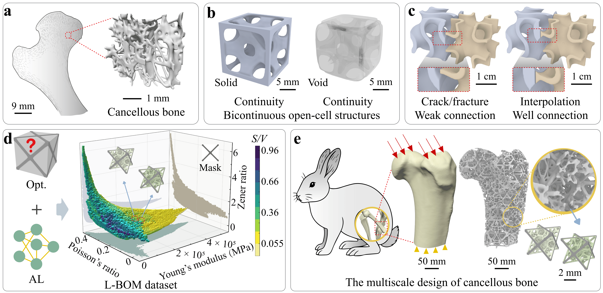

Nature Communications, 2025
Data-driven Inverse Design of Multifunctional Bicontinuous Multiscale Structures
L-BOM is a data-driven framework for the inverse design of bicontinuous open-cell multiscale structures with shared boundaries, broad property coverage, and practical manufacturability.
A scalable route from microstructure dataset construction to rapid multiscale design for implants and lightweight porous systems.
At a Glance

Figure 1. L-BOM connects dataset construction, active learning, and multiscale assembly into one practical inverse design pipeline.
Overview
Abstract
Bicontinuous multiscale structures offer attractive mechanical and transport properties, but their design is challenging because global connectivity must be preserved while exploring a large property space. L-BOM addresses this problem with a large-range, boundary-identical dataset of bicontinuous open-cell microstructures and a boundary-aware active learning strategy. The resulting framework enables fast retrieval and assembly of compatible building blocks for multiscale design.
Methodology
Framework
Large property coverage
Optimization and active learning jointly expand the accessible elastic and geometric design space.
Guaranteed compatibility
All microstructures in each dataset share identical boundaries, enabling direct multiscale assembly.
Bicontinuous open-cell geometry
Connected solid and void phases support both structural performance and transport functionality.
Manufacturing-ready outputs
Open channels simplify resin or powder removal and support additive manufacturing workflows.

Figure 2. Four boundary-consistent datasets constructed through optimization and boundary-aware active learning.
Results
Applications
Bone implants
Match stiffness, pore size, and porosity while preserving connectivity across the assembled implant.
Lightweight structural components
Reuse compatible microstructures to generate high-performance multiscale parts without costly post-processing.

Figure 3. L-BOM enables compact and cancellous bone implant design with matched mechanical and pore characteristics.